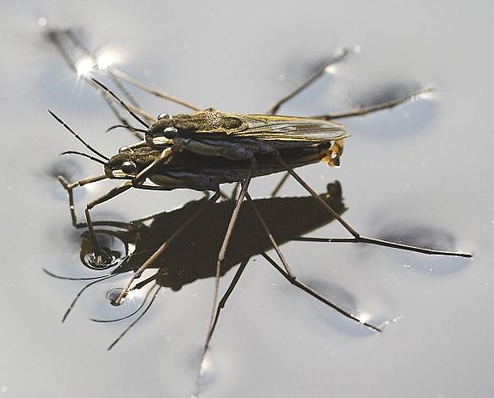

Navigation instructions
- Press at the bottom
left corner of the page to open a menu.
- Jump to any slide within this presentation to clicking its title.
- Press to navigate to another presentation.
- Press to "print" a *.pdf of the presentation.
- Press to open a written transcript of the audio in the slides.
- Press the
SPACEkey to progress forward in the presentation. - Use the
UP/DOWN/LEFT/RIGHTarrow keys or the arrows in the bottom right corner of the page to navigate the presentation.
CP535/970: Molecular and interfacial science
Surfaces and interfaces
L Lue
Department of Chemical and Process Engineering
University of Strathclyde
Overview
- Interfaces / surfaces
- Intermolecular forces
- Wetting
- Young-Laplace equation
- Shape of interfaces
- Summary
Interfaces and surfaces


Interfacial / surface tension

Surface tension

\begin{align*}
dW &= \gamma dA
\\
dW &= {\bf F} \cdot d{\bf r}
\end{align*}
Typical values of surface tension
| compound | surface tension | \(T\) |
|---|---|---|
| mN m-1 | $^ˆ$C | |
| water | 72.80 | 20 |
| n-octane | 21.62 | 20 |
| acetone | 25.20 | 20 |
| benzene | 28.88 | 20 |
| toluene | 28.40 | 20 |
| ethanol | 22.10 | 20 |
| 1-octanol | 27.60 | 20 |
| glycerol | 63.40 | 20 |
Typical values of surface tension
| compound | surface tension | \(T\) |
|---|---|---|
| mN m-1 | $^ˆ$C | |
| sodium chloride | 114 | 801 |
| mercury | 425.41 | 20 |
| iron | 1700 | 1530 |
| water | 72.80 | 20 |
| n-octane | 21.62 | 20 |
Surface tension of alkanes
| compound | surface tension |
|---|---|
| mN m-1 | |
| n-hexane | 18.43 |
| n-heptane | 20.14 |
| n-octane | 21.62 |
| n-decane | 23.83 |
| n-dodecane | 25.35 |
| n-undecane | 24.66 |
| n-tetradecane | 26.56 |
| n-hexadecane | 27.47 |
Interfacial tension
| interface | interfacial tension |
|---|---|
| mN m-1 | |
| water / hexane | 50.80 |
| water / heptane | 51.24 |
| water / octane | 51.64 |
| water / nonane | 52.06 |
| water / decane | 52.33 |
| water / undecane | 52.56 |
| water / dodecane | 52.87 |
Interfacial tension
| interface | interfacial tension |
|---|---|
| mN m-1 | |
| water / butanol | 1.8 |
| water / benzene | 6.8 |
| water / mercury | 415 |
| water / hexane | 50.80 |
Measurement of surface tension
Intermolecular forces

- Coulomb / electrostatic
- dispersion
- hydrogen bonding
- chemical bonds
- hydrophobic effect
Cohesion
\begin{align*}
W_{11} &= 2\gamma_1
\end{align*}
Estimate of cohesion energy
| \(M_w\) | \(\Delta H\) | \(T_b\) | \(\rho\) | \(\Delta U\) | |
|---|---|---|---|---|---|
| g mol-1 | kJ mol\(^{-1}\) | K | kg m\(^3\) | kJ mol-1 | |
| hexane | 86.18 | 31. | 341.2 | 655 | 28.2 |
| octane | 114.23 | 41.4 | 398.7 | 703 | 38.1 |
| decane | 142.29 | 51.3 | 447.2 | 730 | 47.6 |
| water | 18.015 | 40.660 | 373.17 | 997 | 37.6 |
| ethanol | 46.07 | 38.56 | 351.5 | 789 | 35.6 |
| acetone | 58.08 | 31.27 | 329.3 | 784 | 28.5 |
| mercury | 200.59 | 59.2 | 629.81 | 13560 | 54.0 |
\begin{align*}
\Delta U &= \Delta H - R T_b
\\
W &\approx \frac{1}{4} \rho^{2/3} \Delta U
\end{align*}
Adhesion
\begin{align*}
W_{12} = \gamma_1 + \gamma_2 - \gamma_{12}
\end{align*}
oil-water interface
| interfacial tension | cohesion | adhesion | |
|---|---|---|---|
| mN m-1 | mJ m-2 | mJ m-2 | |
| n-hexane | 50.80 | 36.86 | 40.43 |
| n-heptane | 51.24 | 40.28 | 41.70 |
| n-octane | 51.64 | 43.24 | 42.78 |
| n-decane | 52.33 | 47.66 | 44.30 |
| n-dodecane | 52.87 | 50.70 | 45.28 |
cohesion energy for water: 145.6 mJ m-2
hydrophobic effect


Wetting

Contact angle

\begin{align*}
\gamma_{SV} &= \gamma_{SL} + \gamma_{LV}\cos\theta_c
\end{align*}
Contact angle: Typical values
| interface | contact angle |
|---|---|
| degrees | |
| mercury-glass | 140 |
| water-glass | 0 |
| water-paraffin | 90 |
| water-silver | 90 |
| kerosene-glass | 90 |
| water-copper | 86 |
| water-teflon | 108 |
| glycerol-teflon | 100 |
| carbon tetrachloride-teflon | 36 |
Dynamic contact angle

Young-Laplace equation
\begin{align*}
\Delta p &= \frac{2\gamma}{R}
\end{align*}
Pressure between two soap bubbles

Capillary rise
Shapes of interfaces
Curves in space

Curvature of surfaces

Curvature of surfaces
Surfaces
Young-Laplace equation

\begin{align*}
\Delta p &= \gamma\left(\frac{1}{R_1}+\frac{1}{R_2}\right)
\end{align*}
Droplet shape

Surfaces of revolution
Overfilling a cup

Overfilling a cup

Summary
- Interfacial / surface tension
- Wetting
- contact angle
- Intermolecular forces
- cohesive energy / adhesive energy
- Young-Laplace equation
- Capillary force
- Shape of interfaces